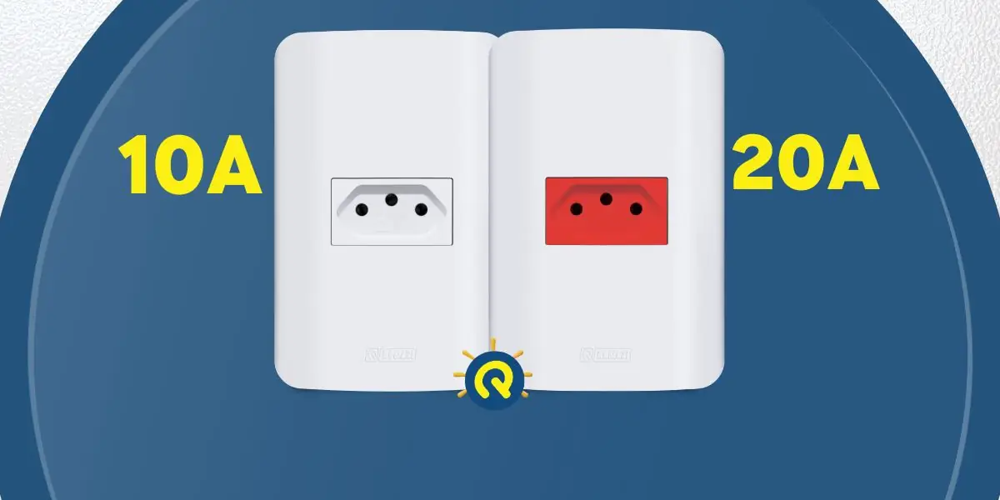

Entenda a diferença entre tomadas de 10A e 20A

O novo padrão de tomadas do país, em vigor desde 2011, foi criado para oferecer mais segurança no uso de equipamentos elétricos em ambientes residenciais, comerciais e industriais.
Além do terceiro pino, que funciona como aterramento, o novo padrão de tomadas do Brasil inclui dois modelos de tomadas. Para correntes de 10A, os conectores são menores e mais finos.
Apesar da tomada de 10A ter o diâmetro apenas um pouco menor, a diferença é suficiente para impedir o encaixe de um plugue maior.
A medida evita que se conecte um plugue de 20A em uma tomada de 10A, prevenindo superaquecimento nos fios e riscos de acidentes e incêndios.
Tomadas de 10A
Esse padrão é mais fino: os plugues e tomadas possuem 4 mm de diâmetro, e são utilizados para alimentar equipamentos como eletrodomésticos, computadores de baixo e médio desempenho, carregadores de celular e televisores.
Nessas tomadas, a potência máxima permitida em 127 V é de 1270 W, e para 220 V a potência máxima permitida é de 2200 W.
Tomadas de 20A
Quando o equipamento precisa de uma carga mais reforçada para funcionar de mais de 1000 W, como é o caso de aparelhos de ar-condicionado, secadores de cabelo profissionais e secadoras de roupa, entra em cena a tomada de 20 A, com plugues mais grossos e capacidade maior de transmitir energia com segurança.
Os plugues e orifícios têm 4,8 mm de espessura e precisam ter um circuito elétrico específico. Nessas tomadas, a potência máxima permitida em 127 V é de 2540 W, e para 220 V, a potência máxima é de 4400 W.
Também é preciso tomar cuidado com a espessura dos fios condutores da tomada: se forem cabos muito finos pode acontecer sobreaquecimento desse cabo.
Confira, na tabela a seguir, a espessura ideal para os cabos:
Largura do Fio Condutor | Suporta (Sem aquecer)
1,5 mm² = 15,5 ampères
2,5 mm² = 21,0 ampères
4,0 mm² = 28,0 ampères
6,0 mm² = 36,0 ampères
10,0 mm² = 50 ampères
Como saber a corrente elétrica correta?
Para saber qual a corrente elétrica correta de seus equipamentos e eletrodomésticos, consulte sempre o manual de instruções que acompanha o aparelho.
Em todo caso, é importante incluir no projeto elétrico as duas opções de correntes. Equipamentos de 10 A funcionam perfeitamente em tomadas de 20 A, mas o contrário não é verdadeiro.
Portanto, mesmo que houver necessidade, jamais utilize adaptadores para abastecer equipamentos que necessitam de 20 A em tomadas de 10 A ou force a entrada do plugue na tomada.
Trocar o módulo e espelho da tomada também não irá resolver o problema, já que haverá o encaixe, porém a fiação ficará comprometida.
Para converter o uso, é necessário que o circuito elétrico da tomada esteja preparado para receber os aparelhos, o que exige a troca da fiação. Assim, você evita o risco de curto-circuito e a queima dos aparelhos.